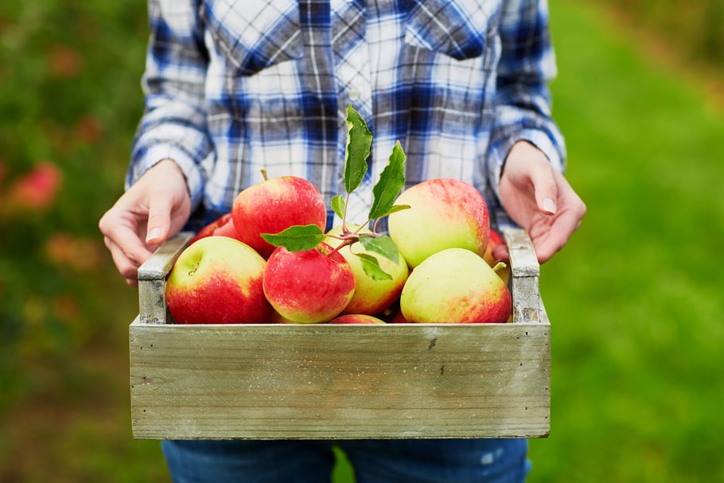

Dans le processus de fabrication des jus naturels Oasis, la première étape est la récolte des fruits arrivés à maturité. Nous donnons une attention particulière à cette étape primordiale et qui sert de matière première à l'ensemble de notre processus. Nos fruits gorgés de saveur sous les beaux jours ensoleillés sont sélectionnés avec soins. Toutes nos équipes sont formées avec rigueur, afin de fournir un travail irréprochable.Le processus de farication des jus naturels Oasis, rassemble deux techniques de transformation minutieuses. En effet selon la consistance souhaitée, c'est à dire des boissons avec ou sans pulpe, on préférera le tamisage ou la centrifugation des jus. Ce travail requiert un sens du détail particulier. Nos équipes les plus spécialisées veillent au bon fonctionnement de ces étapes essentielles.
La pasteurisation est notre avant-dernière étape, elle est l'une des plus importante car elle s'assure d'éliminer l'intégralité des bactéries en portant les jus à 90 degrès pendant moins de 2 minutes. Les valeurs nutritionnelles des fruits sont conservées et le temps de conservation des boissons est augmenté. Pour finir les produits Oasis sont embouteillés, prêts à la vente en magasins dans vos rayons.